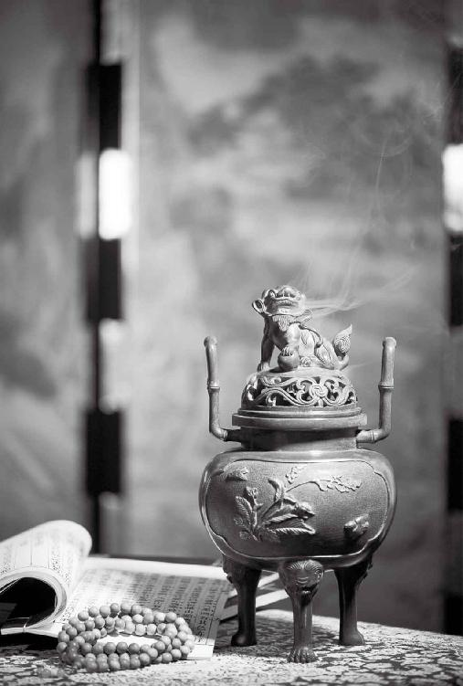

“金匮”是古代皇室储存最珍贵经书的地方
不传之秘：《金匮要略》
读书只能读“真言”
梁冬：我们开始讲第四篇“金匮真言论”。
徐文兵：按顺序应该讲第三篇“生气通天”。但因为这一篇主要讲阴阳——我们计划在讲完“四气”（四季）变化对人的影响之后再讲阴阳。所以，我们先跳过第三篇，从第四篇开始讲。
第四篇的题目叫“金匮真言论”。凡是带“论”的，都是问答①。
我们先破下题。“匮”怎么读呢？很多人不求甚解或者不了解中医，经常把它读作匮（kui）。有一种补肾的药叫金匮肾气丸。很多人买药时会说“我要金匮（kui）肾气丸”，这是不对的，在古代，匮发gu#的音。
“金匮”是古代皇室储存最珍贵经书的柜子。我曾经参观世纪坛博物馆，里面有个柜子，贴了个标签叫“金匮”。仔细看那个柜子，木材质地非常好，还镶了金边。所以，要为“金匮”做一个对联的话，下联应该叫“玉函”。什么是玉函？它是个匣子。“金匮”和“玉函”，一个柜子，一个匣子，都是珍藏珍贵典籍经书的地方。
“金匮”是古代皇室储存最珍贵经书的柜子。
我们讲“金匮真言”，需要明白两点：第一，“非其人勿传，非其人勿授”，在古代这些都是属于绝密级别的；第二，让人得道的这个“道”，是圣人行之、愚者佩之的。老子说过一句话，“上士闻道，谨行之”，意思是说闻道之后，一定要很认真、很严肃地去履行它、实践它。
梁冬：下面一句是“中士闻道，若存若亡”，什么意思呢？
徐文兵：《黄帝内经》说了“日出而作，日落而息”。有些人今天想起来了，就赶紧早睡早起，明天赶上饭局，朋友一敬酒,然后去唱歌，这茬就忘了。这就叫“中士闻道，若存若亡”，就是一会儿想起来，一会儿又忘了。
梁冬：“下士闻道，大笑之”又是什么意思？
徐文兵：就是很多人耻笑中医是伪科学。看到有些人反对中医，我就说没事，谢谢您反对。您如果说中医是伪科学，您就按中医所说的相反方向去做。中医讲“春生、夏长、秋收、冬藏”，您就去冬泳吧；中医说精是宝贵的，您就去耗精、去手淫；中医说“五谷为养”，要把五谷作为主食多吃，“五果为助”，把水果作为五谷的辅助，您就把它颠倒，把水果当成主食，五谷作为辅助。
很多人耻笑中医是伪科学。看到有些人反对中医，我就说没事，谢谢您反对。您如果说中医是伪科学，您就按中医所说的相反方向去做。
“下士闻道，大笑之”，下士闻道后，把“道”作为嘲笑对象，他们既不遵守实践，也不像“愚者佩之”，愚者起码还把“道”当成正经事挂起来。老子说得好，“不笑不足以为道”，不被这帮蠢货耻笑的东西还真称不上是道。
老子说得好，“不笑不足以为道”，不被这帮蠢货耻笑的东西还真称不上是道。
古人传道或者一些经典时，要沐浴、焚香、更衣。为什么？就是要通过这种仪式改变一下人的心境。同样一句话，经过这种仪式说出来，人的感受会比较深。

焚香，通过仪式表达对《黄帝内经》这部伟大著作的尊敬。
徐文兵：“金匮”是从《金匮要略》这本书里来的，它是《伤寒杂病论》的一个部分。《伤寒杂病论》是谁写的呢？
梁冬：张仲景写的吧!
徐文兵：他本名是张机，字仲景。我们不能叫他的名讳，应该叫他的字。如果叫人家张机，就不对了。
梁冬：所以叫您徐文兵，不能直呼您的名讳徐小周，是吧？
徐文兵：《伤寒杂病论》几经战乱！东汉末年，三国纷争，再加上瘟疫流行，这本书到了晋朝都散乱了。后来，一个叫王叔和的人重新整理，把它编成了两本：讨论外感病的叫“伤寒论”；讨论内伤杂病的叫 “金匮要略”。中医调治内科病的一些方法，就是从《伤寒杂病论》里面的《金匮要略》中学来的。金匮肾气丸也是里面的一个方子，它本名叫肾气丸或者崔氏八味丸。
讨论外感病的叫“伤寒论”；讨论内伤杂病的叫 “金匮要略”。
我再跟大家说一下所谓的经方。
梁冬：经方从哪里来的？是不是从《伤寒杂病论》里来的？
徐文兵：对。现在公认的经方都是“伤寒论”里的方子，关于外感病，它有113个方子。“金匮要略”里面也存了256个方子，尽管与“伤寒论”互相有重合，但我们还是管它们叫经方。
现在公认的经方都是“伤寒论”里的方子，关于外感病，它有113个方子。
另外，《伤寒论》不是张仲景自己发明的，是古代先贤传承下来的，由他结合当时防治瘟疫（伤寒流行）的经验撰成一本书。实际上张仲景用的方子，全部来自于商朝开国宰相伊尹写的一本书——《汤液经法》。
实际上张仲景用的方子，全部来自于商朝开国宰相伊尹写的一本书——《汤液经法》。
梁冬：伊尹做饭也特别好吃。
徐文兵：做饭，伊尹是一个高明的厨子；治病，他是名上医；治国，他是位良相。
伊尹有超人的感觉能力，他不仅会调配汤和液，还知道它们入哪条经，能起发散还是收敛、固涩还是温中的作用。所以，我们说的经方，是通过《伤寒论》保留下来的《汤液经法》中的方子。
讲“金匮”时，首先要请大家抱着一种尊敬、敬仰的态度，这是古人的不传之秘，通过我们向大家传播其精神。
《金匮要略》传承下来是很不容易的。所以，讲“金匮”时，首先要请大家抱着一种尊敬、敬仰的态度，这是古人的不传之秘，通过我们向大家传播其精神。
梁冬：前面讲了“金匮”两个字，那“真言论”作何解释呢？
徐文兵：《黄帝内经》第一篇叫：“上古天真论。”“余闻上古有真人者，提挈天地，把握阴阳，呼吸精气，独立守神，肌肉若一。”什么叫真言？就是真人传下来的言。什么叫言？“昔在皇帝，生而神灵，弱而能言，幼而徇齐，长而敦敏，成而登天。”
什么叫真言？就是真人传下来的言。
梁冬：言是有系统的，一套一套的。
徐文兵：言不是语，古人写的文我们叫什么？
梁冬：文言文。
徐文兵：我们现在学的什么课？
梁冬：语文课。
徐文兵：所以，言和语的差别太大了。儒家讲，人一辈子追求三立，立德、立功、立言。所以，真人是与天地融为一体、对自然规律有把握的人。他们经过了自己的体会，给后辈留下来的话就叫真言，绝对不是我们这些凡夫俗子，肉眼凡胎的人在胡言乱语。
真人是与天地融为一体、对自然规律有把握的人。
论，有问有答叫论。如果没有论，它就是一个自述的文章。比如《伤寒杂病论》，一看“论”就知道，它是一个问答体的文章，可是经过历代流传，有些东西没了，后人就胡乱编辑，面目全非了。真正的古本“伤寒论”第一个叫问曰，学生问，然后下面是 “师曰”。第一篇叫平脉辨证，学生问是什么脉，然后老师回答。
梁冬：对。
徐文兵：我向朋友推荐过李时珍写的两本书，有的朋友已经搜到了，正在慢慢读。我觉得，很多人没有碰到《伤寒杂病论》的好版本，至今为止保存得最全的版本叫桂林古本，是张仲景的后裔保存下来的。桂林古本没有分成《伤寒论》和《金匮要略》两部分，它是整个的一本书。所以，有点中医基础的人要学“伤寒论”的话，直接到网上去搜“桂林古本伤寒论”。
梁冬：为什么要桂林古本呢？
徐文兵：因为北方异族入侵以后，真正的中华文明逐步南迁。
梁冬：哦，怪不得用广东话念古诗都是押韵的。
徐文兵：对。广东话九个音，我们普通话才四个音：一声、二声、三声、四声。
我再给大家推荐一个网站——民间中医网。很多虽然身在民间，但是有气有神的一帮有志之士，在里面有一些真知灼见。
现在很多人写论文都是为了评职称、提工资，他们说的话连自己都不信，所以，他们写的文章大家干脆别看。大家要去看修行到一定层次的真人给我们留下的“言”。
现在很多人写论文都是为了评职称、提工资，他们说的话连自己都不信，所以，他们写的文章大家干脆别看。大家要去看修行到一定层次的真人给我们留下的“言”。
所以，这一篇叫“金匮真言论”。